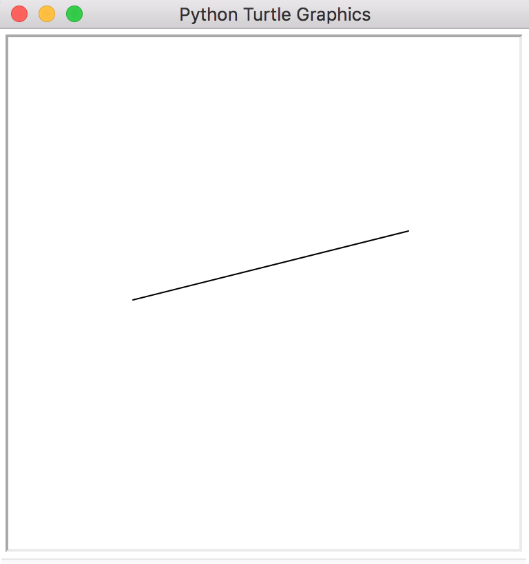

mountain.py (just for fun!)
Write a program that randomly generates rocky mountains. Do this using:
- lists of tuples
- turtle
Here's a few examples of mountains rendered by this program:
Part 0
Set up a turtle program and create a function called draw_line:
- parameters:
- start - a tuple representing a coordinate in a 2-dimensional plane
- end - a tuple representing a coordinate in a 2-dimensional plane
- processing:
- using start and end as end points
- draw a line from start to end with turtle
- return:
- (this function does not return any value)
- None
Test your program:
draw_line((-100, 0), (100, 50))

Part 1
Create a function called get_midpoint
Part 2
Rather than use a hard-coded dictionary as your thesaurus, use an external thesaurus file (right-click and save as… to where your Python program is) to populate the keys and values in your dictionary. Use the following line to read in your file (do not use absolute paths):
f = open('thesaurus.txt', 'r') The data in the file is in the following format:
word1,synonym1,synonym2,...,synonymN-1,synonymN
word2,synonym1,synonym2,...,synonymN-1,synonymN
word3,synonym1,synonym2,...,synonymN-1,synonymNEvery word occupies its own line followed by a comma-separated list of synonyms. Every word can have a potentially unlimited # of synonyms. Your task for this part is to open this file and parse it into a Python dictionary object so that it functions just like the simple thesaurus from the previous part. Here's a sample running of your program:
Example Interaction
Enter a phrase
> happy birthday said the sad kitten
CONTENT ANNUAL HOLIDAY PRONOUNCED the DOLOROUS CHESHIRE CATHints
Generating the thesaurus will be the trickiest part:
- For each word in the thesaurus you will need to create a new list that contains all of the synonyms for that word.
- You can then store this list in the dictionary using the 1st word as the key.
- Again,
splitis incredibly helpful here!
Part 3
Finally, modify your above program to write a song for you. It'll use another external file, the lyrics to Taylor Swift's Bad Blood, as a source for lyrics.
- Download the lyrics to Bad Blood (right-click and save as to the same directory that your program is in)
- Instead of asking the user for a phrase… open the lyrics file (bad_blood.txt), and read the entire contents as a string using
file_object.read() - Using the same algorithm that you used in the previous program, change the words in the song to a random word from the thesaurus
- However, only do this in 1 out of every 2 words (that are found in the thesaurus)… so that only 50% of the words are matched in the thesaurus are substituted
- Again, words that are swapped should be printed in all UPPERCASE letters. Here's a sample running of your program (note that you can simply remove all punctuation from the source file for this program):
- Print out the new lyrics!
- Profit!!!
Example Output
Cause baby now we got DISAPPROBATION blood
You know it use to be mad love
So PLEASURABLENESS a ATTENTION SOCIALITY what youve done
Cause INFANT now we got bad blood ...(Optional) Part 4
If you're on OSX, you won't even have to sing the lyrics that you "wrote"! Instead, you can have the computer sing it for you. Use the following lines of code at the end of your programming, substituting the variable lyrics with your own variable that contains lyrics:
# lyrics is the variable that contains the new lyrics to your song
from os import system
system("say -i -v Fiona " + "\"" + lyrics + "\"")